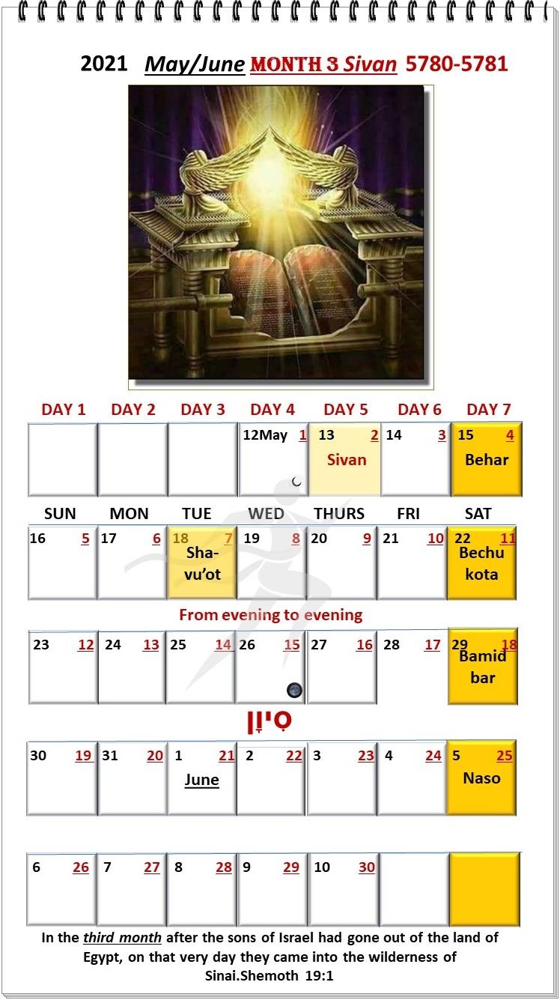
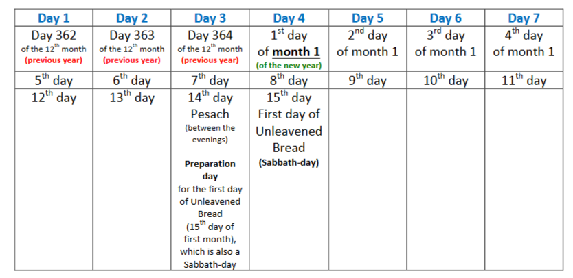
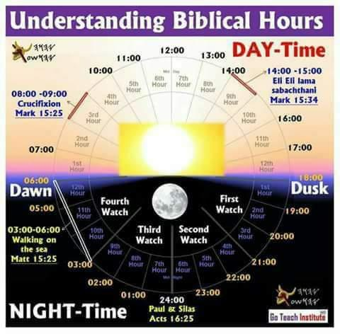
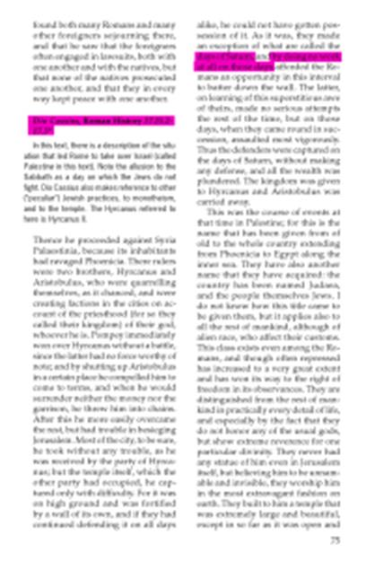
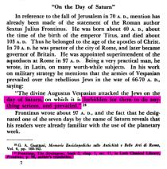
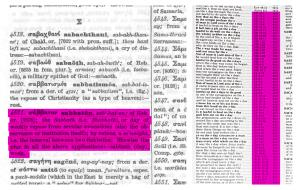
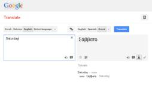

WHEN is the seventh-day of the week according to Scripture?
Many believers are confused and even deceived when it comes to which day of the week (according to the current worldly Gregorian calendar), the commanded seventh-day of rest are (Ber/Gen 2:2-3; Shem/Exo 20:8-11; Dev/Deut 5:12-15; Luqas/Luk 4:16; Ma’asei/Acts 17:2 & Ib’rim/Heb 4:9).
The people of הוהי do NOT bow to or serve any false deity/god (including Saturn), nor do we honor them or observe the Gregorian calendar. To us, the days of the week are merely NUMBERED from 1-7, just as it appears in Scripture. So, no matter which day of the week you and I keep our Shabbat (according to the Gregorian calendar) – they ALL originally come from the Greeks and Romans, who named the days of the week after their gods.
The Anglo-Saxons, who invaded Britain hundreds of years ago, adopted this idea but substituted their own gods. The English language inherited and changed those names a bit, but the ones we use today resemble those names.
עשוהי, our Messiah is our perfect Lamb, Who was slain for our sins, iniquities and trespasses (Yesh/Isa 53; Kepha Aleph/1Pet 2:24; Matt 8:17 & Qor Aleph/1Cor 15:3-8).
The Appointed Times of Almighty הוהי is His Prophetic Time Plan, and our Messiah is an integral part (fulfillment) of this plan.
Pesach (Passover) symbolizes His death (fulfilled)
Matzah (Unleavened Bread) symbolizes His burial (fulfilled)
Bikkurim (First Fruits) symbolizes His resurrection (fulfilled) He is the FIRST-FRUIT of creation (Col 1:15-17), and the FIRST-FRUIT of those having fallen asleep (the dead) (Col 1:18) – thus also the FIRST FRUIT of the harvest.
Let’s look at a verse in Scripture which PROVES that the seventh-day Shabbat is and has always been on the day we know today as (satur-day) according to the Gregorian calendar, but to the people of הוהי it is merely the seventh and last day of the week. Please NOTE that the people of הוהי do NOT follow the Gregorian calendar, but הוהי’s Calendar, and only mention (satur-day) to illustrate to those who do not follow הוהי’s Calendar on which day of the week the seventh day of הוהי is observed in modern society.
Yochanan/John 19
31 Therefore, since it was the Preparation Day, that the bodies should not remain on the stake on the Shabbat – for that Shabbat was a high one – the Yehuḏim asked Pilate to have their legs broken, and that they be taken away.
PLEASE NOTE that the Shabbat-day this verse refers to was the First Day of Unleavened Bread (see also verse 14 of chapter 19), which according to Vay/Lev 23:7 is also a Shabbat day (15th day of the 1st Scriptural month). The expression 'high day' being a reference to an annual commanded Shabbat.
Please NOTE that there are varying accounts of the day of Messiah ’s impalement in the four gospel books, but I firmly believe that Yohanan/John’s account in chapter 19 is the most accurate, based on his very close relationship with Messiah, as well as all the other deep revelations found in this book of Scripture. We also see that Yohanan was present as Messiah hung on the stake. Messiah referred to Him as the taught one He loved (Yochanan/John 19:25-27)!
Messiah עשוהי was thus impaled on the fourteenth day of the first (1st) month – which is the day before the annual Shabbat of the 15th day of the first month (1st day of Unleavened Bread). It is also prophetic in that Messiah is our perfect Lamb, Who was slain for us. The 1st day of the 1st month of a Scriptural year begins on the 4th day of the [seven] day week – SINCE CREATION, without ever changing, as our Creator’s TIME has NEVER BEEN LOST since His creation.
This (4th day) is the day that הוהי (YHUH) created the sun, moon and stars. ONLY the luminaries are used to determine signs, appointed times, days and years (Bereshit/Gen 1:14).
See chart below to demonstrate on which day of the week the Preparation day of the 1st day of Unleavened Bread is – which falls on the 15th day of the 1st month EVERY YEAR.

Preparation day for the first day of Unleavened Bread (15th day of first month), which is also a Shabbat-day
15th day First day of Unleavened Bread (Shabbat-day)
As the book of Yohanan (John) doesn’t describe the time of Messiah’s last breath, I will quote the following scriptures from the book of Luqas/Luke, chapters 23 and 24.
Luqas/Luke 23
44-46 And it was now about the sixth hour (12 noon), and darkness came over all the land, until the ninth hour (3 pm or 15h00). And the sun was darkened, and the veil of the Dwelling Place was torn in two. And crying out with a loud voice, עשוהי said, “Father, into Your Hands I commit My spirit.” And having said this, He breathed His last. (See also Matt 27:45)

Messiah thus breathed His last breath mid-afternoon of the third day of the week – the day of Preparation for the 15th day of the 1st month, which is the 1st day of Unleavened Bread – a Shabbat day.
Luqas/Luke 23
54-56 And it was Preparation day, and the (weekly) Shabbat was approaching. And the women who had come with Him from Galil followed after, and saw the tomb and how His body was laid. And having returned, they prepared spices and perfumes. And they rested on the Shabbat according to the command (meaning they did NOT go to the tomb on the Shabbat-day).
Luqas/Luke 24
1-3 And on the [first day] of the week, at early dawn, they came to the tomb, bringing the spices which they had prepared, and they found the stone rolled away from the tomb. And having entered, they did not find the body of the Master עשוהי
Messiah עשוהי was in the “grave” three days and three nights according to Scripture.
Mattithyahu/Matthew 12
40 “For as Yonah was three days and three nights in the stomach of the great fish, so shall the Son of Aḏam be three days and three nights in the heart of the earth.
See the chart below confirming the 3 days and night’s Messiah was in the earth, which also confirms that the weekly 7thday Shabbat of הוהי falls on a (Gregorian Saturday).
Messiah עשוהי was thus in the earth 3 nights (nights 3, 4 and 5 of the week) and 3 days (days 4, 5 and 6 of the seven-day week), confirming Scripture.
If we take all the above scriptures in consideration, we can conclude that Messiah עשוהי was raised sometime just BEFORE the seventh-day Shabbat ended, but definitely NOT on the first day of the week as Christianity (falsely) promotes.
It is my understanding (not contradicting Scripture) that Messiah was raised before the weekly Shabbat-day (Gregorian Saturday). He RESTED on the Shabbat-day according to His Father’s command (Ber/Gen 2:3, Shem/Exo 20 and Dev/Deu 5). He appeared to people on the first day (Gregorian Sun-day) of the week, after the weekly seventh-day and only after His empty tomb was discovered (read Luqas chapter 24, especially verses 1 to 27).
Let’s ask the question - Has HEBREW TIME been LOST since Creation?
Scripture is clear – הוהי [blessed] the seventh-day and [set it apart] as an ETERNAL day of rest and covenant UNTO ALL GENERATIONS (including ours). He was the FIRST ONE that rested on His Shabbat (See also Ber/Gen 17:7; Shem/Exo 12:14-17; 31:13-16, Dev/Deu 7:9).
Three different translations also indicate that the Preparation Day for the weekly Shabbat was on a Fri-day (6th day of the Scriptural week).
LBP (Holy Bible of the ANCIENT eastern texts: Aramaic of the Peshitta)
Marqos/Mark 15
42 And when it was Friday evening, which is before the Shabbat.
Luqas/Luke 23
54 This was a Friday, and the Shabbat was approaching.
GW (Gods’s Word)
Marqos/Mark 15
42 It was Friday evening, before the day of worship. Again, we see that Friday (6th day) is reckoned to be preparation to the Shabbat-day!
ISR – The Scriptures Restored Translation
Marqos/Mark 15
42 And when evening (G3798) had come, because it was the Preparation Day (G3904), that is, the day before the Shabbat. We see that EVENING is the day BEFORE the Shabbat.
STRONG'S Concordance
G3904 paraskeué ► preparation, the day of preparation (for a Shabbat or feast) Definition: the day of preparation, the day BEFORE the Shabbat, Friday From Strong ’s
G3903 paraskeuazó ► to prepare, make ready (or readiness), make preparations
G3798 opsios op'-see-os
From G3796; late; feminine (as noun) afternoon (early eve)
The calendar now in use, a Roman calendar, has been changed, but that change did not break the weekly seven-day cycle. Before its change, it was called the Julian calendar, because it originated at the time of Julius Caesar @ 31 BCE. Pope Gregory ordered the one change, and since then, it has been called the Gregorian calendar. The Julian calendar was imperfect - it inserted leap years frequently. Back in 31 BCE they supposed the year was exactly 365 1/4 days long, and to take care of the extra one-fourth day each year, added a day to the month of February every four years. However, it was found later the year was 12 minutes and 14 seconds shorter than this.
Consequently, by the time of Pope Gregory, the calendar had drifted TEN DAYS away from the seasons.
The spring equinox, consequently, fell on March 11th, instead of March 21st. To correct this, ten days were dropped from the calendar, but they were dropped only from the number of days in the MONTH, not from the number of days in the WEEK. A man named Lilius proposed the method that was adopted in making the change.
In the Catholic Encyclopedia, Vol. 9, p. 251, under article "Lilius," explaining this change, we read:
"Thus, every imaginable proposition was made, only one idea was never mentioned, viz., the abandonment of the seven-day week."
In the Catholic Encyclopedia, Vol. III, p. 740, article "Chronology," we read:
"It is to be noted that in the 'Christian' period, the order in the days in the week has never been interrupted. Thus, when Gregory XIII reformed the calendar in 1582, Thursday, 4 October was followed by Friday, 15 October. So in England, in 1752, Wednesday, 2 September was followed by Thursday, 14 September."
Since the Catholics changed the calendar, the Catholic Encyclopedia is the best historic authority there is on the question, and is proof positive. Enabling the reader to clearly understand it, and SEE how it was worked out on the Calendar, see a reproduced actual calendar below. The change was made in Spain, Portugal, and Italy, in 1582. Here is the calendar for October 1582.
OCTOBER 1582
Sun 1st day
Mon 2nd day
Tues 3rd day
Wed 4th day
Thurs 5th day
Fri 6th day
Sat 7th day
1 2 3 4 15 16 17 18 19 20 21 22 23 24 25 26 27 28 29 30 31
You will notice how ten days dropped out. One day was the 4th, and the next day was the 15th of October. However, the 4th was Thursday, and the next day was Friday. To make it still plainer, the 29th of September that year was a Shabbat, or seventh day (Saturday). The 30th was Sun-day. The 1st of October was Monday, the 2nd was Tuesday, the 3rd was Wednesday, the 4th was Thursday, and the next day was Friday, but it was not the 5th, it was the 15th. And the following day was Saturday, the 16th. Actually Saturday, the 16th was just one week of seven days after the proceeding Saturday, the 29th of September. There had been exactly seven days and seven sunsets, from one Shabbat to the next. The change in the calendar DID NOT IN ANY WAY CHANGE THE SHABBAT, or the succession of the DAYS OF THE WEEK.
The British countries refused to change the calendar when the pope ordered it. They continued with the old Julian calendar until 1752 and while their days of the month were different, yet their days of the week were JUST THE SAME AS IN ROME. Those who kept the Shabbat in England kept the same seventh-day (Saturday) that was called (Saturday) in Rome.
Those who observed Sun-day observed the same day, both in Rome where the calendar had been changed, and in London where it had not. The English countries changed the calendar in 1752. By that time, it was necessary to drop out 11 days. The change was made in September as follows:
SEPTEMBER 1752
Sun 1st day
Mon 2nd day
Tues 3rd day
Wed 4th day
Thurs 5th day
Fri 6th day
Sat 7th day
1 2 14 15 16 17 18 19 20 21 22 23 24 25 26 27 28 29 30
Therefore, we see that the present system of the seven-day recurring cycle week that has Saturday for the seventh day has been IN EFFECT SINCE 31
BCE. This proves that there has not been any change in the weekly cycle from then until now. The Saturday of today is the same Seventh day of the week as it was in during the time of the Second Temple. Therefore, we can rest in the knowledge that the weekly cycle with the seventh day Shabbat has been the same since the Yehudim returned from Babylonian captivity.
Several Protestant Leaders, confessed that Saturday has ALWAYS been the actual seventh-day Shabbat . . . To mention a few:
Dwight L. Moody
D. L. Moody, Weighed and Wanting (Fleming H. Revell Co.: New York), pp. 47, 48.
The Shabbat was binding in Eden, and it has been in force ever since. This fourth commandment begins with the word 'remember,' showing that the Shabbat already existed when God wrote the law on the tables of stone at Sinai. How can men claim that this one commandment has been done away with when they will admit that the other nine are still binding?"
Jubilee 3
10 And for this reason the commandment is written on the heavenly tablets in regard to her that gives birth: 'If she bears a male, she shall remain in her uncleanness seven days according to the first week of days, and thirty and three days shall she remain in the blood of her purifying, and she shall not touch any qodesh thing, nor enter into the sanctuary, until she accomplishes these days which (are enjoined) in the case of a male child. 11 But in the case of a female child she shall remain in her uncleanness two weeks of days, according to the first two weeks, and sixty-six days in the blood of her purification, and they will be in all eighty days.' 12 And when she had completed these eighty days we brought her into the garden of Eden, for it is most qodesh than all the earth besides and every tree that is planted in it is qodesh. 13 Therefore, there was ordained regarding her who bears a male or a female child the statute of those days that she should touch no qodesh thing, nor enter into the sanctuary until these days for the male or female child are accomplished. 14 This is the Torah and testimony which was written down for Yisra’el, in order that they should observe it all the days.
John Wesley, The Works of the Rev. John Wesley, A.M., John Emory, ed. (New York: Eaton & Mains), Sermon 25, vol. 1, p. 221.
"But, the moral law contained in the Ten Commandments, and enforced by the prophets, he [Christ] did not take away. It was not the design of his coming to revoke any part of this. This is a law which never can be broken.... Every part of this law must remain in force upon all mankind, and in all ages; as not depending either on time or place, or any other circumstances liable to change, but on the nature of God and the nature of man, and their unchangeable relation to each other."
Disciples of Christ First Day Observance,pp. 17, 19.
"The first day of the week is commonly called the Shabbat. This is a mistake. The Shabbat of the Bible was the day just preceding the first day of the week. The first day of the week is never called the Shabbat anywhere in the entire Scriptures. It is also an error to talk about the change of the Shabbat from Saturday to Sunday. There is not in any place in the Bible any intimation of such a change."
A few Roman Catholic Confessions
James Cardinal Gibbons, The Faith of our Fathers,88th ed., pp. 89.
"But you may read the Bible from Genesis to Revelation, and you will not find a single line authorizing the sanctification of Sunday. The Scriptures enforce the religious observance of Saturday, a day which we never sanctify."
John Laux, A Course in Religion for Catholic High Schools and Academies (1 936), vol. 1, P. 51.
"Some theologians have held that God likewise directly determined the Sunday as the day of worship in the New Law that He Himself has explicitly substituted the Sunday for the Shabbat. But this theory is now entirely abandoned. It is now commonly held that God simply gave His Church the power to set aside whatever day or days she would deem suitable as Holy Days. The Church chose Sunday, the first day of the week, and in the course of time added other days as holy days."
Catholic Virginian Oct. 3, 1947, p. 9, art. "To Tell You the Truth."
"For example, nowhere in the Bible do we find that Christ or the Apostles ordered that the Shabbat be changed from Saturday to Sunday. We have the commandment of God given to Moses to keep holy the Shabbat day, that is the 7th day of the week, Saturday. Today most Christians keep Sunday because it has been revealed to us by the [Roman Catholic] church outside the Bible."
Martin J. Scott, Things Catholics Are Asked About (1927), p. 136.
"Nowhere in the Bible is it stated that worship should be changed from Saturday to Sunday.... Now the Church ... instituted, by God's authority, Sunday as the day of worship. This same Church, by the same divine authority, taught the doctrine of Purgatory long before the Bible was made. We have, therefore, the same authority for Purgatory as we have for Sunday.”
Was the weekly cycle changed during the seventy years that the Yehudim were in captivity?
An article in The Jewish Encyclopedia refers to the Babylonian Calendar and shows the antiquity of its origin:
"The Babylonian calendars are preserved in the inscriptions [cuneiform tablets that were discovered], and in both, each month has 30 days as far as can be learnt. The Babylonian Empire is the ancient civilization dating back to Nimrod and Semiramis after the flood.
The calendar used in ancient Babylon had many similarities to the calendar used in Mitsrayim/Egypt, at the time of Mosheh/Moses. With that thought in mind, notice the statement Josephus makes in dating the flood [Antiquity of the Jew, Book I, Chap. 3, Sec. 3]:
"This calamity [flood] happened in the six hundredth year of Noah's government (age), in the second month, called by the Macedonians Dius but by the Hebrews Marchesuan: for so did they order their year in Egypt. However, Moses appointed that Nisan, which is the same with Xanthicus, should be the first of the month for their festivals, because he brought them out of Egypt in that month. So that this month began all the solemnities that they observed to the honor of G-d although he preserved the original order of the months as to the selling/buying, and other ordinary affairs."
Notice the two significant factors of Josephus statement:
First, he said, "Moses appointed that Nisan . . . should be the first month for their festivals, . . . so that this month began all the solemnities that they observed to the honor of G-d." Actually, הוהי appointed through Mosheh the first month to be Abib (Exo 13:4). The Yehudim changed the name to Nisan, while in Babylonian captivity. When Josephus uses the word Nisan, he is using the Jewish name for the first month, as used in the Jewish post-captivity calendar, which uses the names of Babylonian gods for all the months.
Secondly, Josephus stated Mosheh "preserved the original order of the months as to the selling and buying, and other ordinary affairs," thus they continued to also use the civil calendar they had used in Egypt! However, הוהי gave Mosheh the Hebrew Calendar. Therefore, we see that, Mosheh and the children of Israel USED two calendars, a purely “Observational” Calendar from the Mighty One that began in the spring and the purely calculated one, the Egyptian civil calendar which began in the fall – the only difference in them was the beginning of the year. The weekly cycle was the same in both.
The Proof of the Yehudim (True Yehudim)
About 70 CE, the Yehudim were driven from Yerushalayim (Jerusalem) into EVERY NATION ON EARTH. From that time until now, they have been separated, scattered into all nations. Through the Middle Ages, the Yehudim in China had no way of communication with the Yehudim of Africa, or the Yehudim in Europe, or Yehudim of other parts of the world.
Yet today, with communication restored over every part of the world, we do not find the Yehudim all mixed up on which day to keep. Time could not have been mixed up or lost under the strict Mosaic regime between then and the time of the Second Temple. Joshua's Long Day was just ONE DAY, and it did not change the reckoning of time in any way. If time had been lost, the Yehudim of one part of the world would be observing one day, and the Yehudim of other parts, other days. But everywhere - in EVERY NATION ON EARTH, we find the Yehudim have been keeping the SAME IDENTICAL DAY - the day we call Saturday - the true seventh day (from Creation).
The YEHUDIM is the miracle of all history - and the YEHUDIM is another proof that we have not lost the Shabbat. Also consider that our Messiah was a Yehudim, from the Tribe of Yehudah (Judah). Messiah עשוהי is the One Who הוהי used to guide His people back to Him, allowing them to ENTER INTO COVENANT with Him.
The SIGN of this COVENANT is הוהי’s Shabbat ’s (Exo 31:13 and 16). Do we really think that הוהי would allow His people to LOSE His seventh-day or be confused about its observance, since it is a SIGN of His covenant with His people?
Even Astronomy admits it. See a quote from the official government statements to the League of Nations, as published August 17, 1926, in an official League document. The government of Finland presented this observation from one of its astronomers:
"The reform (calendar reform before the League) would break the division of the week, which has been followed for thousands of years, and therefore has been hallowed by immemorial use."
The government of France presented the following statements from two of its leading astronomers:
"One essential point is that of the continuity of the week . . . a continuity which has existed for so many centuries."
"The continuity of the week . . . is without doubt the most scientific institution bequeathed to us by antiquity." Stated Prof. D. Eginitis, director of the Observatory of Athens, a member of the League
Committee, "The continuity of the week . . . has crossed the centuries, and all known calendars, still intact."
More historical evidence
HISTORICAL PROOF THAT SATURDAY IS THE TRUE SHABBAT
Sha’ul, in his first letter to Timotiyos writes:
Timotiyos Aleph/1Timothy 5
19 Do not receive an accusation against an elder except from two or three witnesses.
Quoting Torah on judging people which was taken from the Brit Hadashah (OT)
Devarim/Deu 19
15 “One witness does not rise up against a man concerning any crookedness or any sin that he commits. At the mouth of two witnesses or at the mouth of three witnesses a matter is established.
1)A Roman historian named Cassius Dio who wrote about Roman History, gives an account of Wars waged between Rome & Judea. In it he explains the capture of Jerusalem in 63BC saying “As it was, they made an exception of what are called the days of Saturn, and by doing no work at all on those days afforded the Romans an opportunity in this interval to batter down the wall. The latter, on learning of this superstitious awe of theirs, made no serious attempts the rest of the time, but on those days, when they came round in succession, assaulted most vigorously. Thus, the defenders were captured on the day of Saturn, without making any defence, and all the wealth was plundered”. Cassius wrote that the Romans who learned that the Jews rested on the Days of Saturn (Saturday which was known as Saturn’s Day in Rome), attacked the Jerusalem stronghold on those days. These words also tally with the writings of Josephus, showing us that Saturn’s Day in Rome coincided with the day kept as the Shabbat by the Jews, even in the 1st Century BC.
Reference – Cassius Dio – Roman History 37.16.1-4 [A] See picture below

2)A Roman Soldier named Frontinus in his book named Strategems writes the account of the destruction of the 2nd temple in Jerusalem in 70AD, saying “The divine Vespasian attacked the Jews on the days of Saturn, on which it is forbidden for them to do anything serious, and prevailed.” Similar to the words of the historian Cassius Dio, this Roman soldier equated the day of rest (Shabbat) of the Jews to the Day of Saturn (Saturday which was known as Saturn’s Day in Rome). This account of Vespasian (also known as Titus) attacking Jerusalem on Shabbat days, tallies with the account seen in the Historical works of Josephus as well.
Reference – Frontinus – The Stratagems 2.1.17. [B]See picture below

3)The Greek Language and the ancient Manuscripts of the New Testament also give evidence of the connection between the word “Shabbat” and the day which has been named “Saturday”. The Greek word “Sabbaton”(Strong’s Greek Concordance – G4521 – σάββατον) used in the Original Greek Manuscripts of the New Testament which is translated as “Shabbat” in English, is the same word that is used for “Saturday” in the Greek language even today. In other words, the day which is known to us as “Saturday”, is called “Sabbato” (σάββατο) by the Greeks even today. This is a remarkable piece of evidence which has survived almost untouched to our very present age, making “Shabbat” and “Saturday” one in the same. Saturday translated to GreekA person who is unsure about this fact can look at any Greek-English Dictionary to seek further verification. The easiest tool to translate English into Greek that anyone could use would be Google Translate, as seen in the thumbnail to your right. This goes to prove that wherever we see the word “Shabbat” in our New Testament English translations, it originally meant a particular day (which is proven to be none other than what we know as “Saturday” today.
Reference – Strong’s Greek Concordance & Dictionary [C]See picture below


I trust that with all the compelling evidence provided through this study, those who were still in doubt as to which day of the week the weekly Shabbat is observed, will be guided by הוהי’s Ruach and find rest in His Word.
Excerpts from:
Article by H.W Armstrong
Excerpts from:
https://biblethingsinbibleways.wordpress.com/
Written by:
The WAY Derech Ha Yashar Ministries